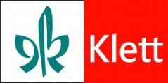

Нови обрасци за глобални и оперативни план рада наставника
- за све предмете у I, II, V и VI разреду и
- за предмете Информатика и рачунарстви и Техника и технологија у 7. разреду
Нов образац за глобални план рада
Нов оперативни план рада за наставнике за септембар
Нов оперативни план рада за наставнике за остале месеце
Стручно усавршавање наставника:
Документ о вредновању сталног стручног усавршавања у установи
Годишњи глобални план рада наставника:Годишњи план рада - уводни део
Годишњи план рада - табела за теме
Годушњи план рада додатне наставе
Годишњи план рада допунске наставе
Годишњи план рада слободних активности
Оперативни планови рада наставника:Оперативни план рада наставника за септембар
Оперативни план рада за остале месеце
Издвајамо из школског плана:
ускоро...
Мала помоћ у изради школске документације:
Појмови који се користе у настави
Дневници ученичке евиденције:
Дневник ученичке евиденције 15а
Дневник ученичке евиденције 16
Дневник ученичке евиденције 16а
Дневник ученичке евиденције 16а - владање улази у просек
Упутство за рад са дневницима ученичке евиденције
Ево неких корисних линкова
| Лого | Назив | Линк за сајт |
|---|---|---|
| Министарство просвете | https://www.mpn.gov.rs/ | |
| Завод за уџбенике и наставна средства | https://www.knjizara.zavod.co.rs/ | |
|  | Клетово издаваштво | https://klett.rs/ |
| Бигзово издаваштво | https://www.bigzskolstvo.rs/ | |
| Завод за унапређивање образовања и васпитања | https://zuov.gov.rs/ |